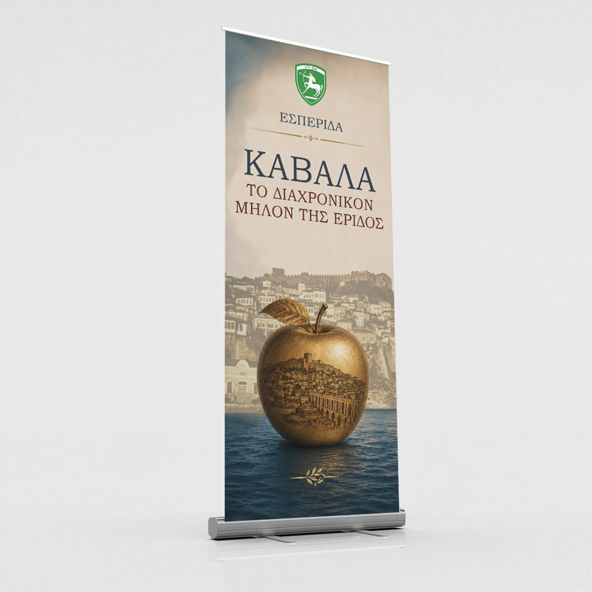

Selected project · 2026
Kavala:
The Timeless
Apple of Discord
A complete visual identity for a public historical event, developed across poster, invitation, large-format display and commemorative print.

01 / Overview
One identity.
Every format.
The design combines Kavala’s coastal landscape with the symbolic golden apple, archival texture and classical typography. A restrained blue-and-gold system keeps the event recognisable from a formal invitation to a three-metre outdoor banner.
Process AI-assisted source imagery was developed and art-directed from supplied visual requests. All composition, typography, layout, format adaptation and final artwork were completed by Afyktos.


02 / In production
From file
to public space.


03 / Printed collateral
A consistent system,
down to the page.


Finished output
Designed, adapted
and produced.
The final printed programme brought the visual language into a compact editorial format for attendees.
Supporting project · 2026
Sports Day
Two visual directions and an invitation for an internal wellness event. The brief called for a friendlier identity outside formal military communication while retaining clear hierarchy and organisation branding.


Service context
Design within a
broader IT role.
Created during a nine-month military service placement at the IT Research Office of the 20th Armoured Division. Alongside visual communication projects, responsibilities included end-user support, ticket handling, system monitoring and daily technical assistance.